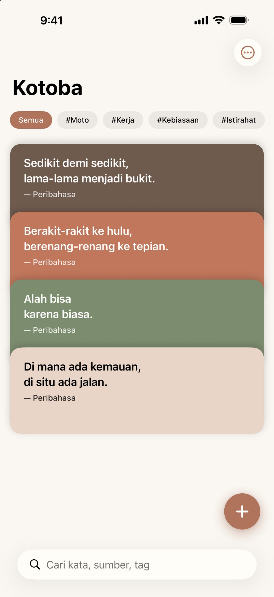
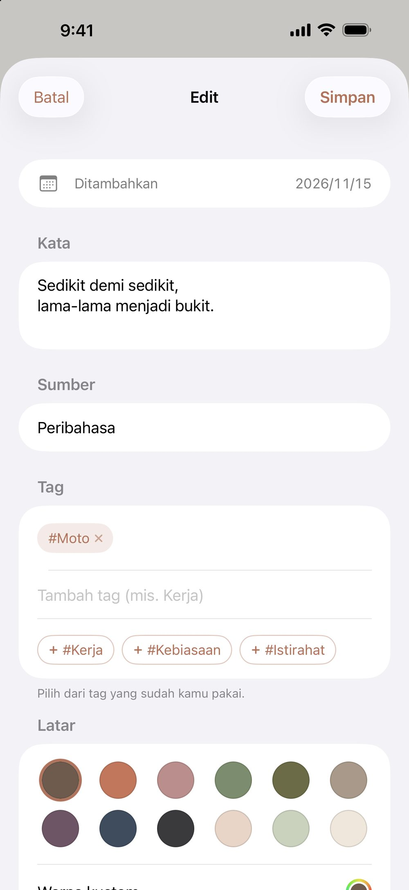

Kotoba adalah kamus pribadi untuk kata-katamu. Kumpulkan baris yang kamu suka — dari buku, film, orang, atau janji pada diri sendiri — lalu sematkan yang paling kamu suka ke Layar Utama sebagai widget.

Bukan feed untuk digulir. Satu kata, pilihanmu sendiri, menunggu di tempat yang memang selalu kamu lihat.
Sematkan satu kata ke widget — Layar Utama kecil, sedang, atau besar, dan tiga gaya Layar Kunci. Ketuk widget untuk membuka kata itu di aplikasi.
Simpan kata beserta sumber, tag, dan warna latar. Saring berdasarkan tag, cari dengan kata kunci.

Tanpa iklan. Tanpa notifikasi. Tanpa akun.
Sekali bayar, bukan langganan.
Mencapai batas tidak pernah menghapus yang sudah tersimpan. Hanya penambahan baru yang berhenti.
No ads, no subscriptions. Pro is a one-time purchase.
Tanpa notifikasi. Tanpa akun. Tanpa iklan.